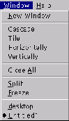

Next: La barra de herramientas
Up: StarDesktop: El Entorno de
Previous: Las ventanas de documento
Índice General
Además de los métodos explicados para manejar las ventanas de
documento, se dispone de un menú llamado [Ventana], con estas
características:
- Cada documento abierto aparece en la lista del menú. Se puede activar
cualquiera simplemente eligiéndolo.
- La opción Cascada coloca todos los documentos de modo que se puedan
ver sus barras del título.
- La opción Azulejar divide al área de trabajo de modo que aparezcan
todos los documentos del mejor modo posible.
- Las opciones Horizontal y Vertical colocan todos los documentos de
modo que sus ventanas ocupen todo el espacio disponible, horizontal o
verticalmente.
Figura 5.9:
Menú Ventana
|

|
Proyecto Cursos - LuCAS - http://lucas.hispalinux.es/htmls/cursos.html